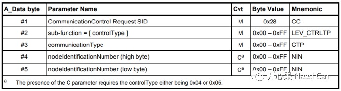
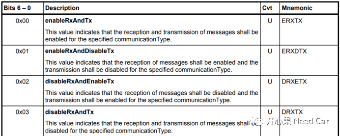
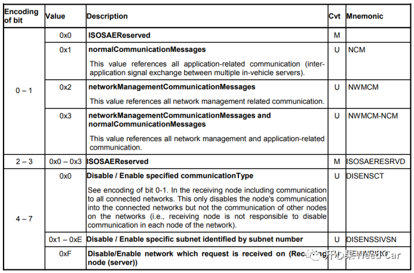
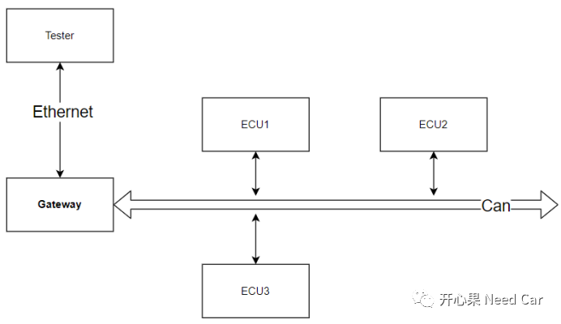

开心果 Need Car · 2022-04-13T18:52:00+08:00 · 微信原文
开发Bootloader或者诊断的朋友，看到标题有没有一愣？基于UDS刷写流程中，0x85（Control DTC Setting）和0x28（Communication Control）服务的使用似乎成了标配，觉得这是刷写流程必不可少的两个诊断服务。请别思维定势，也别经验主义，本文告诉你：这两个服务并不是必须的。
首先，了解一下0x85（Control DTC Setting）和0x28（Communication Control）服务的功能，以及这两个服务在基于UDS的刷写流程中所处的角色。
1、0x85（Control DTC Setting）服务
为了在车辆故障时可以检测出问题的具体“病根”（原因），需求中会明确对应DTC的存储条件、存储信息及故障清除条件，这个过程中，DTC状态信息的更新依赖于DTC对应事件的监控（Monitor）。在刷写的过程中，DTC的存储操作（包括状态更新）是不需要的，即：此阶段不应进行故障事件的Monitor。为了避免刷写期间DTC的上报，可以使用0x85服务关闭DTC的状态更新，不再让ASWC或者BSW进行故障事件的Monitor，即：进行DTCSettingType = off操作。
而当Application程序升级完成以后，再次使用0x85服务使能DTC的Monitor，即：进行DTCSettingType = on操作。
2、0x28（Communication Control）服务
应用程序（Application）中，总线不仅运行应用报文，也会运行诊断报文、标定报文、网络管理报文。
为了便于管理报文的收/发行为，每类报文规定了所属的ID范围，以CAN报文为例，需求可能这样定义：
示例：
Message Type | CanID Range（Uint 16） |
Application | 0~0x3FF |
Network | 0x400~0x4FF |
Calibration | 0x500~0x5FF |
Diagnostic | 0x600~0x7FF |
平时，这些报文都可以在总线中发送，通过仲裁（CanID）参与总线通信，也就是载波监听多路访问（CSMA：Carrier Sense Multiple Access）。如果在程序刷写的过程中，这些报文全部参与总线竞争，应用报文/网络管理报文会因优先级高（CanID越低，优先级越高）而不断抢占诊断报文，诊断可能会因超时而导致刷写失败。
注释：标定报文不会主动参与竞争，应用报文/网络管理报文参与竞争主要是因为这两者均有周期性报文。
为了提升刷写的速率和稳定性，应用报文、网络管理报文是没有必要参与通信的，把总线让出来，只让诊断报文参与通信即可。而这个操作就需要用到0x28（Communication Control）服务，禁止非诊断报文的通信。
0x28服务参数格式如下所示：

常用的sub-function如下所示：

常用的communicationType如下所示：

举个例子：
关闭所有应用报文的外发，诊断指令如下所示：
Length | Service | Sub-function | CommunicationType | |
Tester->ECU | 0x03 | 0x28 | 0x02 | 0x01 |
ECU->Tester | 0x02 | 0x68 | 0x02 |
前面的描述，我们意识到0x85和0x28服务确实很有必要，而且ISO 14229-1也给出了建议，各家OEM直接按照规范开发就好，也不用动脑筋。但是，还真有OEM不按常理出牌。如果不用0x85和0x28服务，那如何确保DTC不上报，同时又确保总线只给诊断报文使用呢？
这里给大家分享一种不用0x85和0x28服务，也能正常升级Application程序的情况，但是需要满足如下几点要求：
（1）使用功能寻址，发送$10 02/82，使得当前网段内的所有ECU均跳转到Bootloader程序，进入编程会话。注意：此时程序在Application中，一般由拓展会话（0x03）跳转到编程会话（0x02）；
具体的解释一下功能寻址，假设功能寻址的CanID = 0x7FF。上位机（Tester）发送功能寻址的诊断指令（这里指$10 02/82），通过网关（Gateway）转发给某个Can网段内的ECU1、ECU2、ECU3，ECU1、ECU2、ECU3均进入编程会话，也意味着ECU1、ECU2、ECU3均跳转到Bootloader程序。诊断的功能寻址类似以太网的广播，针对目标网段内的所有ECU，而非单个ECU（物理寻址针对单个ECU）。

（2）在Bootloader程序中，没有应用报文/网络管理报文外发；
也就是ECU1、ECU2、ECU3在Bootloader程序中，均不能外发应用报文/网络管理报文，确保诊断报文独占Can总线。
（3）在Bootloader程序中，不支持DTC的Monitor。
ECU1、ECU2、ECU3在Bootloader程序中，均不需要开发DTC功能。
一般来说，DTC的Monitor只会在Application中实现。功能寻址$10 02/82的诊断指令，相当于一个复位，目标网段内的所有ECU走下电流程，随后所有ECU通信栈和诊断栈关闭。所以，可以将$10 02/82诊断服务看作0x85和0x28服务的合集。之后，网段内的所有ECU进入Bootloader，且进入编程会话(0x02)，只要在此会话下呆着（功能寻址，周期性发送$3E 80诊断指令），也就没有了ECU之间的通信，因此，0x28服务可以不用，Bootloader内又不支持DTC处理，所以，0x85服务也可以不用。
按照上述逻辑，似乎所有的刷写流程都用功能寻址发送$10 02/82，岂不是都可以不用0x85和0x28服务。注意，$10 02/82诊断服务虽然具备0x28服务的功能，但只是具备其部分功能，即该操作只相当于关闭应用报文和网络管理报文。而某些OEM有时可能需要只关闭应用报文或者网络管理报文，这时，Application就需要支持0x28服务，这是$10 02/82诊断服务所不能替代的。再者，并不是每家OEM的刷写流程都用功能寻址发送$10 02/82。
需求千变万化，开发要以客户需求为导向，而非一成不变！
参考资料
ISO 14229-1_2013(E).pdf
往期精彩回顾